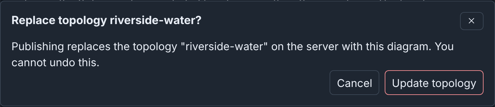

Publishing: details¶
Info
This page holds every rule, limit and message of this feature. For the short guide, see Publishing.
Publish writes these configs from the last saved snapshot of a draft:
- A Topology config.
- The topology name, in the
topologyannotation of each scenario that the diagram lists. - Optionally, an Experiment config with one of those scenarios.
The server checks the snapshot again before it writes. The only other part of Builder that writes a config is the Scenarios dialog.
The examples publish the Riverside Water draft, which lists the scenario
riverside-water (see
The drafts on these pages).
Note
If you published riverside-water in the
quick start, the Riverside Water draft cannot
publish (see
When the source config changed). Use
your quick start draft, with the scenario riverside-water added (see
Scenarios). Its counts are one device and one
connection higher.
Before you publish¶
- Fix the errors, and the five kinds of warnings, that block publishing (see What blocks publishing).
- Apply or cancel your changes in the Inspector. Publish applies and saves valid changes (see Automatic snapshots). Changes that it cannot apply block publishing, and the dialog names them.
- Check your permissions. Publish is not available on a published diagram, which opens read only, or when your role cannot update configs. Each config also needs its own permission (see What each task needs).
Publish is in the toolbar, and in the command palette as Publish…. When your role can update configs, each card on the drafts page also has Publish (see Publishing from the drafts page).
Publishing a topology¶
To update the topology riverside-water from the Riverside Water draft:
- Open the Riverside Water draft.
- Click Publish in the toolbar.
- Under What to publish, keep Topology only.
- Below Topology name, click Use riverside-water. The hint says "A topology with this name exists. Publishing updates it."
- Read Checks: "10 devices, 4 switches, 4 networks and 13 connections are ready to publish." It counts the 2 included devices and their 2 connections separately.
- Click Update topology. Builder asks "Replace topology riverside-water?".
- Click Update topology again.
- Click Close.
The question in step 6, and the result after step 7:


Config names can use only letters, numbers, underscores (_), at signs (@),
periods (.) and hyphens (-). Spaces are not allowed. While a name breaks
this rule, the field gives the rule and the reason, such as "it contains a
space". The reason quotes up to five characters that are not allowed. A
refusal of such a name also gives a valid form, such as Riverside-Water.
The experiment name, and the new topology name of an
import, use the same rule.
Tip
Each time the dialog opens, Topology name starts as the diagram name made into a config name. When the draft can update a topology, a Use button below the field gives its name. This is the topology that the draft last published to, or else the topology that it comes from. Experiment name has the same button.
What the topology holds¶
The Topology config holds the settings of each device. It holds the network
of each connected interface as its vlan. It does not hold the parts of
the diagram that only Builder uses: positions, groups, note nodes,
drawings, colors, line styles, icons, layers and device templates.
It also does not hold the Subnet and Gateway of a network. Builder uses them only to set the Address, Mask and Gateway of the interfaces on the network (see Adding switches and networks). Download > Topology YAML shows the topology as Publish writes it (see Topology YAML).
What publishing changes¶
What publishing changes, above the buttons, compares the server now with the result of a publish to the names in the form. The server uses the last saved snapshot and the checks of Publish, and writes nothing. The list updates when you change the form and after each save.
- Configs: if Publish creates, updates or does not change each config.
- Included topologies: each included topology that Publish adds,
removes or keeps, compared with
includeTopologiesof the topology now. - Scenarios: each scenario that gets the topology, or already names it.
- Disk images: each image that the devices use, and the devices that use it. Each image is new, still used, or no longer used, compared with the topology now.
- VLAN aliases, with an experiment: each alias that Publish sets, changes, removes or keeps. A new experiment gets every alias.
When your role can list the disk images of the server, each disk image line ends ", and the server has it" or ", but the server does not have it". The line has neither ending in these cases:
- minimega is not running.
- The server does not list its disk images within 10 seconds.
- Your role does not have the
diskslistpermission, or cannot list that image.
The server keeps its list of disk images for 10 seconds.
For Riverside Water, on a server without minimega running:

With no included topologies, scenarios, disk images or VLAN aliases, it
says "Nothing outside the Topology changes." Below the lists are the
warnings that publishing would give, with their codes, such as
publish.legacy.replaced (see also Host pins).
When the server would refuse the publish, the reasons come first, under a heading such as "1 error", with "The server would refuse this." The button stays available, because the server checks the diagram again when you publish. Problems that Checks lists do not show again. While they block publishing, it says "The errors listed under Checks block publishing." It then lists only the other problems that the server finds. Examples are a hostname that an included topology also uses, and a scenario that does not exist. When the server cannot answer, it says so.
Create or update¶
The hint under Topology name says what publishing does with that name, and the button names the action. The hint under Experiment name works the same way.
| Hint | Button |
|---|---|
| "Publishing creates a new topology." | Create topology |
| "A topology with this name exists. Publishing updates it." | Update topology |
| "A topology with this name already exists. This diagram cannot update it. …" | Publishing is refused. Enter another name. |
| "A topology with this name changed after this diagram published it. Publishing would overwrite that change. …" | Publishing is refused. See Publishing again. |
| "… This diagram replaces its legacy Builder diagram." or "… Builder could not read its legacy Builder diagram. Publishing removes it." | Update topology. See Replacing a legacy Builder diagram. |
A draft can update a topology in these cases:
- The topology holds a diagram that the draft published.
- The draft is an import of the stored topology. An import from a config file, a copy, and an import that combines included topologies cannot update it (see Import options).
- The draft is an upload of a Builder document from such a draft, such as
riverside-water.builder.json. - You opened the draft from the published diagram (Edit as a draft, or the edit button on the Configs page).
- You opened the draft from the Builder file that the topology names (see Publishing to a topology that names a Builder file).
- You made the draft with Save my history as a new draft from a draft that can update the topology.
- The draft is an import of an experiment made from the topology, and the topology has no legacy Builder diagram.
Replacing a config¶
Before an update, Builder names each config that it replaces:
Replace topology riverside-water?
Publishing replaces the topology "riverside-water" on the server with this diagram. You cannot undo this.
phenix keeps no earlier version of a config. To go back, restore an earlier snapshot in Draft History and publish again.
An update keeps the annotations of the topology, such as maintainer, and
adds builder-doc, which names the published diagram (see
The builder-doc annotation).
A new topology gets only builder-doc. Publish does not write the
annotations that the Inspector shows from an imported config.
Replacing a legacy Builder diagram¶
The update replaces builder-xml with builder-doc, and warns
publish.legacy.replaced (see
Converting a stored topology).
The result¶
The dialog lists each stage and its result, for example:
Published. Every stage succeeded.
document: created — phenix stored the immutable Builder document
topology: updated
scenario: skipped — scenario riverside-water already names topology riverside-water
draft: ok
- document: the published copy of the diagram, on the Published Diagrams tab. It keeps who made the diagram and who edited it last (see Who made and last saved a diagram).
- topology, experiment:
createdorupdated.skippedmeans that the config already holds this snapshot. - scenario:
updated, with the changed scenarios, orskipped(see Scenarios). - draft: the draft records what it published.
When a stage fails, the dialog says "Published with failures. …" or
"Publish failed. It wrote no configs." To finish a publish that wrote
only some configs, remove the cause, for example stop a running
experiment. Then click Back and publish again with the same names.
The stages that are done show skipped, and nothing is written twice.
The button can say Update for a config that the failed publish created.
When the server refuses the publish before it writes anything, the form stays open, and Checks gives the reason after "Could not publish the diagram."
Publishing a topology and an experiment¶
To update riverside-water and create the experiment riverside-lab from
it:
- Open the Riverside Water draft.
- Click Publish.
- Under What to publish, choose Topology and an experiment.
- Set Topology name to
riverside-water. - In Experiment name, enter
riverside-lab. - Keep Experiment scenario at
riverside-water. - Click Update topology and create experiment.
- When Builder asks "Replace topology riverside-water?", click Update topology and create experiment again.
- Click Close.
The dialog before step 7:

The result after step 8:
document: created — phenix stored the immutable Builder document
topology: skipped
scenario: skipped — scenario riverside-water already names topology riverside-water
experiment: created
draft: ok
The topology stage is skipped, because
Publishing a topology wrote this snapshot. If you
changed the diagram after that, or did not do that section, it says
updated. Start
the experiment from the Experiments page (see
Starting / Stopping Experiments in Experiments).
While it exists, Exp in the toolbar opens it (see
Opening the experiment).
Publish writes the VLAN alias of each network (see
Adding switches and networks)
to vlans.aliases of the experiment. With the VLAN alias 120 on the CORP
switch, riverside-lab has:
Scenarios¶
In both modes, Publish adds the topology to the topology annotation of
each scenario that the diagram lists, if the annotation does not name it
yet (see Scenarios). It changes nothing else in
the scenarios. The annotation names topologies separated by commas, for
example topology: riverside-water,riverside-water-b. Only an exact name
counts: riverside-water-old does not name riverside-water.
Experiment scenario selects the scenario of the experiment: one that the diagram lists (the first by default), or No scenario. When the diagram lists no scenarios, the dialog has no Scenarios part, and the experiment has no scenario.
Publish refuses before it writes anything in these cases:
- A listed scenario does not exist on the server, or your role cannot read it ("Scenario NAME does not exist.").
- Your role cannot update a listed scenario whose annotation needs the topology (see What each task needs).
For a scenario that shows "Not found on the server" in the Scenarios dialog, clear its box and click Save scenarios, or store it again.
Storing scenarios from the Scenarios dialog¶
The Scenarios dialog also views, edits, creates and uploads Scenario
configs (see Scenarios). It writes these changes
to the server at once, and Cancel does not undo them. Each change needs
the configs permission of its verb on the scenario: get to view,
update to edit or replace, and create to create or upload. In a draft
that you can only view, the dialog has only View.
Experiment names¶
An experiment name follows the config name rule. When Publish creates an experiment, these rules also apply:
- It cannot be
all, in any case. - When the server names the bridge of each experiment after the experiment (auto bridge mode), the name can have at most 15 characters.
Updating an experiment¶
A draft can update an experiment that it was imported from (see
Importing an experiment)
or published to. It cannot update other experiments, such as riverside,
which was created outside Builder. To update riverside-lab, publish
again. The button says Update topology and experiment.
An update runs the configure stage of the apps, as a save of an Experiment config does. When the configure stage fails, or the experiment is running, the experiment does not change, and the result says "Published with failures. …". Stop the experiment before you update it.
Host pins¶
spec.schedules of an experiment pins VMs to cluster hosts by hostname
(see Scheduling an Experiment).
An update keeps each pin whose hostname exactly matches a device in the
topology, so PLC-2 does not pin plc-2. It removes the other pins, so
that they do not count toward their hosts when phenix places the VMs.
What publishing changes and the result then give the warning
publish.experiment.pins-removed:
Publish removed the host pins of VMs that are no longer in the topology: plc-2 (on compute3), plc-1 (on compute1, renamed to plc-1b).
"renamed to" shows for a device of the diagram that last published the
experiment, or a device imported from a config. To keep a renamed VM on its
host, edit spec.schedules, or schedule the experiment again. Without the
experiments/schedule get permission, the warning gives only the number
of removed pins.
What blocks publishing¶
Errors block publishing, for example a hostname that two devices use. An error about a duplicate names the other device.
Five kinds of warnings also block publishing (see Checks and warnings). The draft saves with them, but the Publish dialog lists them as errors. phenix would store most such topologies, but the experiment would fail or operate incorrectly.
- An interface with no VLAN: an interface of a device that is not external, with no network and no VLAN typed. minimega refuses the interface when the experiment starts (see Connecting interfaces).
- A shared IP or MAC address: two interfaces on the same network with
the same IP address or MAC address.
- Two interfaces are on the same network when they have the same VLAN and the same bridge. The VLAN is the connected network, or else the VLAN typed for the interface.
- A blank bridge and
phenixare the default bridge of the experiment. - The check compares interfaces with no VLAN with each other.
- It compares IP addresses without the prefix length, and MAC addresses in any case and with any separators.
- It ignores blank values, the IP addresses of
dhcpandmanualinterfaces, and the MAC addresses of external devices.
- A hostname phenix refuses: one character long,
all, all digits, orphenixon a device of OS typewindows. External devices are not checked. These names give warnings that do not block publishing: other casings ofall, andphenixon a device that is not Windows. - A device setting that stops the experiment: one of these settings (see
Device settings):
- A Router or Firewall of OS type
vyatta,vyosorlinuxhas an interface with protocolospf, but nonetwork.ospf. - An
ntp-serverlabel names no interface with an IP address.
- A Router or Firewall of OS type
- A device with no drive: a device that is not external, with no drive under Drives. phenix refuses the topology.
Under Checks, the Publish dialog lists the errors first, under a heading such as "2 errors block publishing", then the warnings. Each issue has Go to (see Checks and warnings). In the dialog from the drafts page, Go to opens the editor first.
When the server refuses a publish, the dialog shows the reason, and the errors and warnings of the server with their codes. A refusal about a name also marks its field.
Tip
Download > Topology YAML saves the topology that Publish would write, and lists every problem that blocks publishing (see Topology YAML).
Example: Riverside Water expansion¶
The Riverside Water expansion draft has historian-01-2, a copy of
historian-01 (see
Duplicating a device). The copy keeps
the address 10.10.30.20, and its eth0 is not connected. Publish shows
this error, and Create topology is not available:
1 error blocks publishing
Error: interface "eth0" of "historian-01-2" is not connected to a network and has no VLAN. Thus you cannot publish the interface. Connect it, or type a VLAN for it
Device historian-01-2 interface.vlan.missing
The address is not an error yet, because historian-01-2 is on no network.

To fix the copy:
- Click Go to beside the error. The Inspector opens on historian-01-2.
- Set Hostname to
historian-02. - In the eth0 interface, set VLAN to
OT. - Set Address to
10.10.30.21, so that it does not share the address of historian-01 on OT. - Click Apply. The header says No issues.
- Click Publish. Checks says "11 devices, 4 switches, 4 networks and 14 connections are ready to publish."
- Click Cancel.
This draft cannot publish after another draft published riverside-water
(see When the source config changed).
Included topologies¶
Riverside Water includes the topology corp-services, with dns-01 and
ntp-01 (see Included topologies).
The published topology names corp-services, and does not copy them:
spec:
includeTopologies:
- corp-services
nodes:
# edge-rtr, files-01, historian-01, hmi-01, kali-01, ot-fw, plc-01,
# web-01, ws-01 and ws-02; no dns-01 or ntp-01
A diagram imported with Combine into one new topology publishes the
included nodes as its own (see
Import options). Included
topologies that it could not combine stay in includeTopologies, and the
Checks summary says so.
When an included topology gets a hostname that the diagram also uses after
the import, Publish refuses: "phenix cannot publish topology
riverside-water: node dns-01 is in this topology and in its included
topology corp-services. …". Rename the node here or in corp-services.
Publishing again¶
Publish again with the same names after each set of edits. The draft remembers what it published, even when that snapshot is no longer in Draft History.
Another user or draft can change the topology after you publish:
- When another draft published the topology, the hint says "A topology with this name already exists. This diagram cannot update it. …".
- When someone changed the topology outside Builder, for example with
phenix config edit, Publish refuses. The message and the hint say "… changed after this diagram published it. Publishing would overwrite that change. …". For a draft that comes from the topology, see When the source config changed.
In both cases, make your changes in a draft of the topology as it is now (see Editing a published topology), or publish under another name.
When the source config changed¶
A draft remembers the config that it comes from: by import, by upload of a Builder document made from it, or from its published diagram. Publish refuses the draft, under any name, when the config changed after you made the draft. It does not refuse when the config still holds the publication of this draft, or the published diagram that the draft comes from.
When the Publish dialog finds the change, it shows a warning at the top:
This diagram comes from topology riverside-water. That topology changed on the server after Builder made the diagram. Publish refuses this diagram under any name. To continue, make a new draft of topology riverside-water: import it again or open its published diagram. Then copy your changes to the new draft.
If you publish, the dialog shows the same message after "Could not publish the diagram.". For a draft made from an experiment, the message names the experiment and tells you to import it again.
To keep the work of such a draft:
- Make a draft of the config as it is now. Click the edit button of the topology on the Configs page, or import it again (see Importing a topology or experiment).
- Copy the changed devices from the old draft, and paste them into the new draft. Copy and Paste work between drafts that you open one after the other in the same browser tab.
- Connect the pasted devices again. A pasted device keeps its settings but not its connections, so its interfaces have no VLAN.
When the config no longer exists, the draft publishes as a new diagram.
Publishing to a topology that names a Builder file¶
A topology can name a Builder file on the phenix server as its diagram (see Diagrams read from a file). A draft made with Edit as a draft from that diagram can update the topology while both of these are true:
- The file still holds the diagram that the draft comes from.
- The topology is still what that diagram publishes.
If not, the server refuses, and the form stays open with the reason. Publish under a new topology name instead. The hint under Topology name says "A topology with this name exists. Publishing updates it." in all cases. The reasons are:
- "Could not publish the diagram. Topology pump-station or its Builder file changed after Builder opened this draft from the file."
- "Could not publish the diagram. Topology pump-station is not what its Builder file publishes. Thus this draft cannot update it."
When the diagram in the file comes from an import of a config, such as
pump-station.builder.json from pump-station, the rule in
When the source config changed also
applies.
Publish does not write the file. It stores the published diagram in phenix, and the topology shows that diagram from then on. Its card on Published Diagrams no longer has the tag File. The result gives a warning:
Warning: Topology pump-station names the Builder file /phenix/topologies/pump-station/pump-station.builder.json, which Publish does not change. Download the diagram and replace the file with it, so that the file and the topology stay the same.
To make the file match the diagram, click Download > Builder JSON in the draft, and replace the file on the server (see Editing and publishing).
Editing a published topology¶
To edit riverside-water in Builder:
- Select Configs in the phenix navigation bar.
- In the row of
riverside-water, select the tagbuilder.
Other controls on the Configs page do the same (see From the Configs page). Builder opens the first of these, whoever created the draft:
- The draft that published the topology.
- An earlier draft of the published diagram.
- A new draft of the published diagram.
For a diagram in a Builder file, Builder opens or makes a draft from the file. For a topology without a Builder diagram, the controls open the Import dialog.
Edit as a draft on the Published Diagrams tab opens the same draft (see Published diagrams). See also Deleting a published topology.